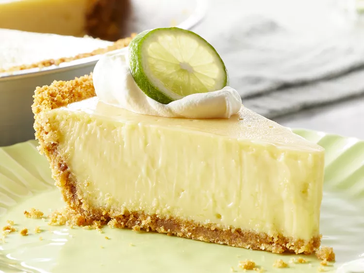

Key lime pie

Discription
This quick and easy key lime pie recipe starts with a graham cracker crust and is filled with a mixture of egg yolks,
sweetened condensed milk, key lime juice & zest. Topped with fresh whipped cream and a lime twist garnish,
it’s a refreshing pie that tastes like the tropics and is a must-make this summer!
Key lime pie dates back to the late 1800s in the Florida Keys. Modern refrigeration wasn’t available at the time,
so fresh milk wasn’t a common commodity. Instead, canned milk was widely used. As a result, this incredibly easy pie came to be.
Ingredients
- Sweetened condensed milk
- Key lime juice
- Sour cream
- Lime zest
- Graham cracker crust
Ingredients
- Preheat oven to 350 degrees F.
- Make the Filling: Whisk the lime zest and egg yolks in a medium bowl for 2 minutes.
Whisk in the sweetened condensed milk, then the lime juice. Set aside at room temperature to thicken while you prepare the crust.
- Make the Crust: In a medium bowl, stir together the graham cracker crumbs, brown sugar, and salt, ensuring no lumps of brown sugar remain.
Drizzle the melted butter over the graham cracker mixture and toss to combine with a fork,
ensuring the mixture is evenly moistened. Press the crust mixture evenly into the bottom and sides of a 9-inch pie plate,
and pack tightly using the back of a measuring cup. Bake for 10 minutes; transfer to a wire rack to cool to room temperature.
- Once the crust has cooled to room temperature, pour the lime filling into the crust.
Bake until the center is set yet still wiggly when jiggled, 15 to 17 minutes.
Return the pie to a wire rack; cool to room temperature. Refrigerate until well-chilled, at least 3 hours, or overnight.
- Make the Whipped Cream: Using an electric mixer, whip the cream on medium speed until soft peaks form.
At this point, add the powdered sugar, a small amount at a time, then the vanilla extract,
while continuing to whip the cream until stiff peaks form.
Decoratively pipe the whipped cream over the filling or spread the whipped cream evenly with a spatula.
Garnish with lime slices, if desired, and serve. Cover leftovers with plastic wrap and refrigerate for up to 3 days.